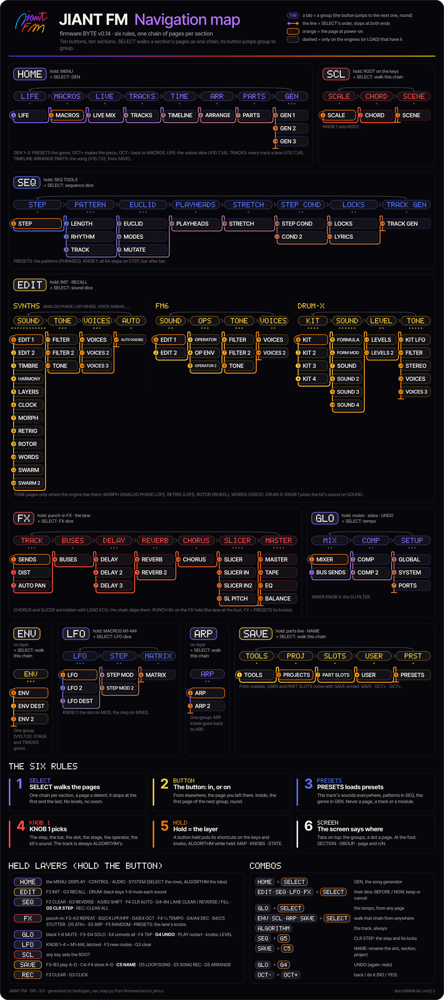

tbytebeat, floatbeat and funcbeat firmware for the M-VAVE FM-1
every sound is a formula of time
enter the formula ↓A free firmware that turns the FM-1 into a formula synthesizer: every sound, drum, being, punch-in and animation is a formula of time. A formula reads the time t and returns a sample: bytebeat in whole numbers and bits, floatbeat in sines, phases and filters. Four engines, from the most tonal and playable to the wildest, on the six tracks, sequencer, songs and effects of JIANT FM, the firmware it is built on.
Current version: v0.16 · beta, for testing
Beta: try it in the browser first. On a real FM-1, back up with JIANT FM's editor before you install: JIANT BYTE keeps its projects apart from JIANT FM's.
Start here
Everything runs in the browser. You don't need to install any program, and you can try JIANT BYTE before touching your FM-1.
The emulator runs the same code as the FM-1, with sound, on your computer or phone. Play it with the keyboard, the mouse or a touch screen: press Switch on.
First back up your projects with JIANT FM's editor. Then open the installer in Chrome or Edge, connect the FM-1 with a USB data cable, press Install and wait without unplugging.
The web editor backs up and edits the FM-1's projects and sounds from the computer. It is still JIANT FM's editor: it is being adapted and does not know BYTE's engines yet.
Needs: Chrome or Edge on a computer (WebUSB and Web MIDI) · a USB cable that carries data, not only charge.
What's inside
JIANT BYTE keeps JIANT FM's foundation (six tracks, the 64-step sequencer, songs, the effects, MIDI and USB) and replaces the sound with formulas, compiled on the instrument and run on both of the FM-1's cores. On HOME each formula becomes a being: a bytebeat a mirrored sprite, a floatbeat a phase portrait with wave tentacles.
The four engines, swelling with their sound
A funcbeat part that plays itself: melody, bass and chords from formulas. 36 states, two at a time (A and B), and a MORPH by timbre between them, one formula bending the other. Chords by the scale's degrees, equations moving its DEFORM, RATE down to 4 bars a step, and DRUMS (808, 909, FLOAT, BIT) fused into the formula.
Eight pads on wavetables of formulas: tables A and B, a STRUCT joining them (MIX, FM, RING, SYNC, FOLD), an envelope and an LFO moving the position. The kit's ATTACK, GAIN and MORPH, live.
A parametric wavetable of formulas: two formulas A and B, POS sweeps between them, WARP bends the phase (sync, mirror, quantise, FM), three detuned voices and a sub.
BYTE: 48 bytebeats. FLOAT: 48 floatbeats. USER: your own text, or one the generator invents (SEED invents it, MUTA moves it). FUNC: the formula is the arrangement. CAOS takes any formula from as written to broken; TIME decides who owns the time.
The formulas talk to each other: the tracks exchange numbers, waveform fragments and character with the other voices that sound, in both directions. The saved formulas stay intact; at 0, nothing changes.
Writes a whole song idea from a genre (43, or EXPLORE, every rule broken), a seed and an energy: MATH and WAVE sounds chosen by musical role, DRUM-W for the drums. The same seed and settings give the same song.
Find your way
Every section works the same way: learn six rules once and the whole synth is known. The map shows each button's groups and pages in the order SELECT walks them.

One chain per section, a page a detent; it stops at the first and the last page.
From another section, the page you left there. Inside, the first page of the next group, round.
Always the track's sounds, by a list: the first turn opens it, PRESETS scrolls, OCT+ loads. Never a page or a track.
The step, the bar, the slot, the stage, the kit's sound. The track is always ALGORITHM's.
A button held puts its shortcuts on the keys: SEQ + G5 clears a step, SAVE + C5 names. Held + SELECT: HOME the generator, EDIT, SEQ, LFO and FX their dice, GLO the tempo.
Tabs on top are the section's groups, a dot a page; the footer says SECTION · GROUP · page and n/N.
What each one is, why it sounds as it does, and where it lives in JIANT BYTE: edit the formulas and play them in the browser.
Learn
The manual explains every page and every knob of BYTE; it is in Spanish for now, the English one is coming. The cheat sheets fit the controls and the sound pages on one sheet each, to keep next to the FM-1.
Every page, layer and engine of JIANT BYTE. English coming.
MANUAL-BYTE.es.md ↗ v0.14Light CPU and FORM 2, in Spanish.
byte-v014.md ↗ PDFButtons, layers and combinations on one page.
cheatsheet-controls.pdf ↗ PDFThe four engines, effects and modulation on one page.
cheatsheet-sound.pdf ↗Coming next
What is being built now. Dates depend on testing on real FM-1s.
| FORM BEATS: kits by style, a 4th percussion lane, hat articulation, states by genre | NEXT |
| FORM in the generator: one shared harmony, FORM as a role, FORM → STEPS | PLANNED |
| The web editor for BYTE's engines | ADAPTING |
| The manual in English | PLANNED |
> more ideas from the testers
JIANT BYTE is in beta. What breaks, what crackles, what is missing on your FM-1: open an issue on GitHub and it goes into the next version.
Report on GitHubSupport
JIANT is made by Juan Jiant, a muralist and visual artist from Buenos Aires. Every contribution pays for development hours and keeps the firmware free for everyone.
FAQ
No: it is a different firmware, built on JIANT FM. Same panel, sequencer, songs and effects; the sound is formulas instead of JIANT FM's engines. Installing BYTE replaces the firmware on the FM-1; the installer can always take it back to the official V15.
BYTE keeps its projects apart from JIANT FM's, but it is a beta: back up every project with JIANT FM's editor before you install. A project saved by a newer version may not open right in an older one.
Yes. The installer has a button to return to the official V15 firmware (you choose the official FM-1.fwsc from M-VAVE). It saves a complete backup first.
Chrome or Edge on a computer, for the installer and the editor: they talk to the FM-1 over USB. The emulator also works in other browsers and on phones.
Use a USB cable that carries data (many cables only charge), connect it straight to the computer without a hub, and close other programs that use the FM-1 over MIDI.